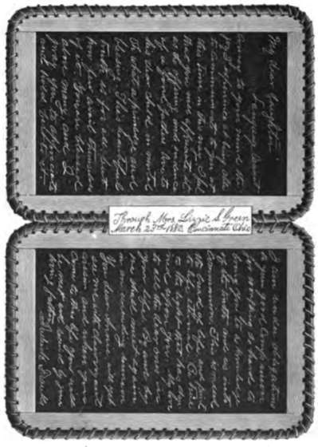
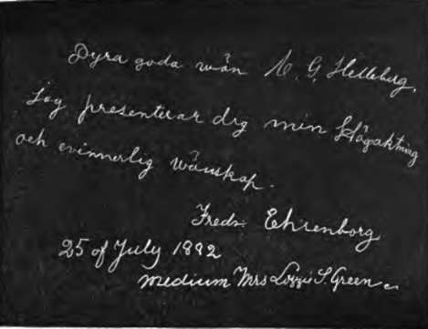

Chapter VIII. Sure Identity Of My Father-In-Law—Madam Ehrenborg Writes To Me In Swedish
Description
This section is from the book "A Book Written By The Spirits Of The So-Called Dead", by Carl Gustaf Helleberg. Also available from Amazon: A Book Written by the Spirits of the So-Called Dead.
Chapter VIII. Sure Identity Of My Father-In-Law—Madam Ehrenborg Writes To Me In Swedish
On the 8th of December, 1881,1 and my wife had a slate-writing seance in the forenoon, and were present in the evening at a trumpet seance with Mrs. Green, and as my wife received a strong convincing test through the name of her father, it is necessary before relating the facts to make a short sketch of a part of his life. He was a Swedish nobleman, named Otto Jacob Nattoch Dag, who, by the favor of the dethroned King Gustaf Adolf the Fourth, was educated in the military academy, and afterwards served as officer in a rank regiment in Stockholm, which the new King Charles the Fourteenth, Johan, the former Napoleon's General Bernadott, looked upon with great favor. This young nobleman wrote an anonymous book about reorganizing the Swedish army, in which many good and necessary reforms were proposed. This book was not intended for sale, but a few copies had been printed for his intimate friends. Some of his so-called friends reported this, and mentioned his name to the King, who became enraged that a young officer should dare to have the impertinence to interfere with his business, and want to teach him, who had such a vast experience in military affairs, the consequence of which was that he was transported to serve in a common infantry regiment, far up in the northern part of the country, a long distance from his near and dear relatives. Such treatment naturally made him feel bad, and he asked permission to travel in foreign countries, which he got, and went straight to Baden, in Germany, where he called on his former King, Gustaf Adolf, and was kindly re-ceived. There he republished his book in the German language, with some additions, which the Swedish minister reported to the King, who then considered him a traitor, and ordered his arrest, but his Swedish friends informed him of this in time, and he went to America under the name of Frederick Franks, which was the name of a German student, who gave him his passport, and which he afterwards adopted and used until his death. The King, Charles the Fourteenth, had him adjudged, unheard and absent, by a court for high treason, for daring to pay a visit to the dethroned King, and the judgment was that he should lose his place and rank in the army. Many years afterwards the King regretted his harsh and unjust treatment of his faithful, patriotic and skillful officer, and pardoned him, and ordered his Swedish minister at Washington to inform him of it, so he could go back and enjoy all his privileges; but his former guard officer had now been for many years a republican citizen, who, with his artistic and many other talents and business capacity, had made himself independent, and he never went back. Nobody here but the family knew any thing of his Swedish name, and my wife said to me that she would be more fully convinced of her father's identity if he would sign himself with that name.
In the slate-writing seance in the forenoon I had put my own slate, which Mrs. Green never touched, under the side of the stand nearest me, and on Mrs. Green's slate the following appeared:
" Put out the slate and see if any thing is on it ? "
I did so, and on my slate the following sentence appeared:
" God bless you both is the wish of your exalted friend, Fredrika Ehrenborg."
Among other things was the following: " Now, dear papa and mamma, we have done all we can this morning. Much love to you both. Grandpa will be with you to-night; Grandpa Helleberg, Mary and Julia, too, Emil, Gustaf and Charley. You will have many bright and beautiful spirits with you this evening to cheer you on your road to the beautiful spirit world. There all are in peace and happiness— Emil, Frances, Emma, Mary, Julia.
" Emanuel Swedenborg."
On the evening of the 8th of December, at the above-mentioned trumpet seance were present, besides me and my wife, the following persons : Mr. and Mrs. Stebbins, Mr. and Mrs. Taylor, Mrs. Catherine Rem-lin, Mr. and Mrs. Green and Mrs. Boggs. "We had spirit singing and talking, with many other remarkable manifestations. Among the spirits who spoke were Garfield, Washington and Lincoln, three ex-Presidents. Two slates were put on the table by Mr. Green before the light was put out, and I had that afternoon bought two very small silica slates, of which I gave one to my wife, who held it in her hand, and the other, in the dark, I put on the corner of the table nearest me, which nobody else knew any thing about. When the seance was over several names and messages were written on the two big slates, and on mine was the following on both sides :
" My Dear Daughter—Oh, how happy I am that I have found a way to communicate to you. I will be with you often. O. J. N. D."
On the other side appeared :
" My Dear Daughter—According to promise I am with you. I have many things to tell you. With my heart full of love-for you, 0. J. K D."
These were the initials of my wife's father's Swedish name, Otto Jacob Natt och Dag, and we were highly pleased with the result. Subsequently he communicated often, signing his name in full, as above.
On the 23d of March, 1882, at Mrs. Green's, among other communications, was the following :
" Dear Papa—All of your Swedish friends are here, and intend to use their influence to-day and give you a surprise before the seance is over. All are present except Swedenborg, who we expect very soon. We are not sure of success, but we intend to try. The surprise will be Grandpa Franks trying to communicate inside of the double slate, with your assistance holding the slate and all of your friends influence combined. Madam Ehrenborg withheld her message to-day to add her strength and help grandpa with his surprise to mamma and you. * * * Swedenborg has come ; get the slate. This is all you will get from me to-day. Your loving son, Emil."
We cleaned the doable slate and put it under the table, where I held on to one end of it and pressed the two slates together with my hand, while Mrs. Green held the other end, and we both felt and heard the writing going on inside the two slates. The writing continued about ten minutes, after which a tap was heard, when I took the slate out, opened it, and in my father-in-law's handwriting found the following communication, which I had photographed and electrotyped as seen opposite :
On the 23d of July, from 9 to 11 a. m., at Mrs. Green's, I had cheerful writings from our three sons, and grand-daughter, Julia Muth first, and afterwards there appeared on the slate the following communication in the Swedish language :
" Dyra goda wan C. J. Helleberg! Jag prsenterar dig min Hogaktning och evinnerlig wanskap.
" Fredrika Ehrenborg."
Which, translated into English is: " Dear, good friend C. J. Helleberg, I present you my esteem and eternal friendship.
" Fredrika Ehrenborg."
I had it photographed, as shown.

Continue to:
- prev: Chapter VII. Investigations With Mrs. Green—Remarkable Dark Trumpet Seance At Which I Received A Most Beautiful Flower From My Son Emil And Miss Mary Muth
- Table of Contents
- next: Chapter IX. Information Of A Spiritual Marriage—The Wedding And The Wedding Tour To The Planet Mars